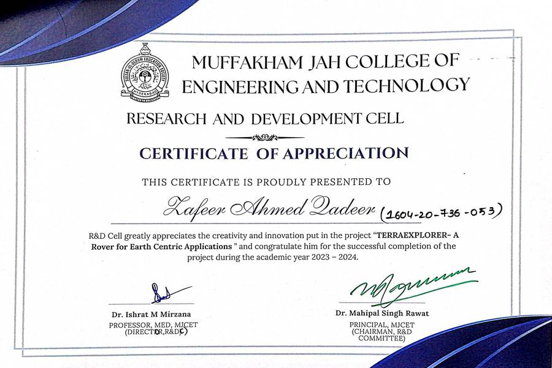
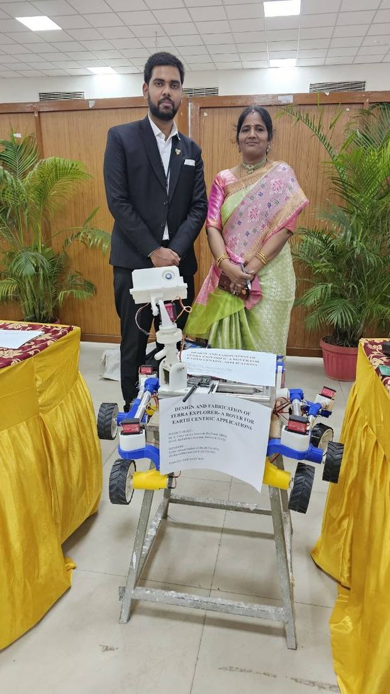

04 / MECHATRONICS
Terra Explorer
Built for uneven ground.
A rocker-bogie chassis, printed joints and a real working rover. Mechanical design inside a multidisciplinary build.
- Role
- Only mechanical engineer on a four-person team
- Context
- MJCET R&D Cell, 2023 – 2024
- Tools
- SOLIDWORKS, 20 × 20 mm aluminum T-slot profile, FDM-printed joints, RF control with an FPV feed
- Scope
- Six-wheel chassis on rocker-bogie suspension, carrying survey instrumentation over uneven ground
- Output
- A driven rover; GIS-based land-use and infrastructure analysis was the planned next stage
- Skills
- Chassis design
- Rocker-bogie suspension
- Aluminum T-slot
- FDM-printed joints
- RF control
- FPV integration
I was the only mechanical engineer on an otherwise all-electronics team. I designed the chassis and rocker-bogie suspension in SolidWorks around 20 × 20 mm aluminum T-slot profile, 20 mm aluminum tube and 3D-printed joints, then printed and assembled the running vehicle. Steering used an Ackermann layout; the rover is remote-operated over RF with an FPV video feed.
The project was funded by the MJCET R&D Department and received the R&D Cell's Letter of Appreciation.



Rocker-bogie suspensionAckermann steeringT-slot chassisFDM-printed jointsArduino Mega